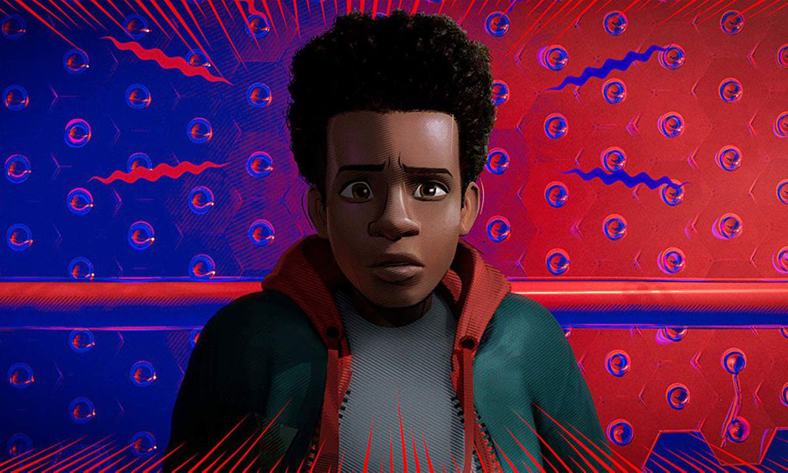
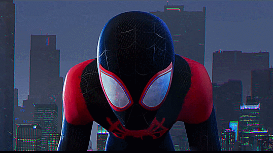
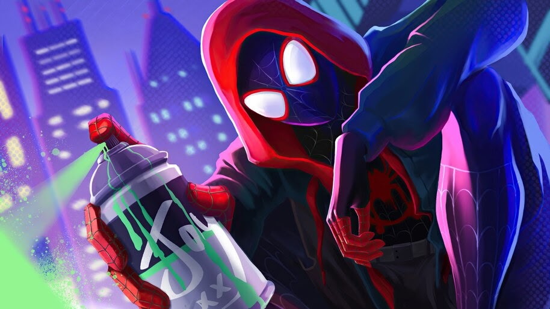
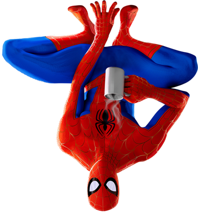
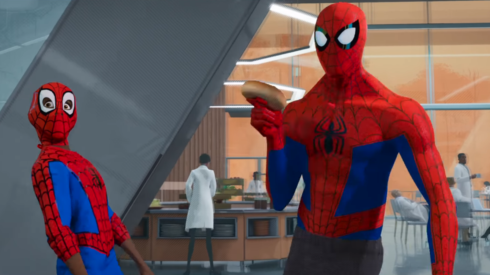
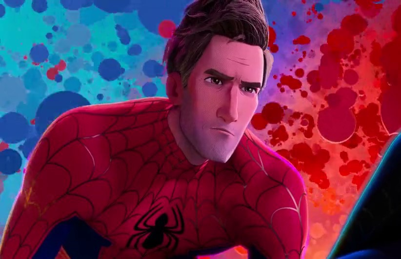
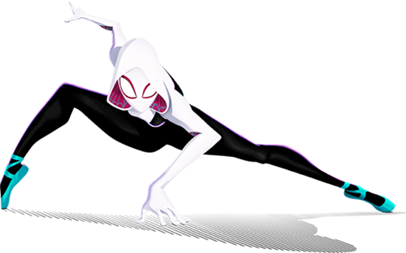
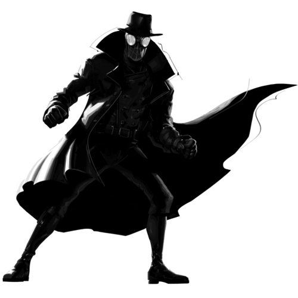
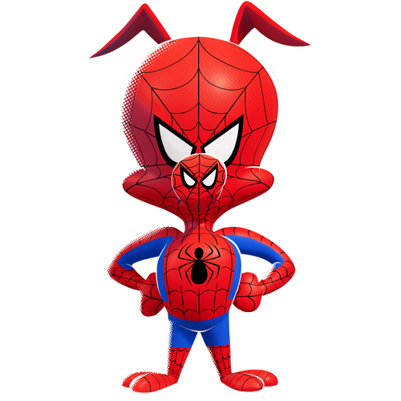
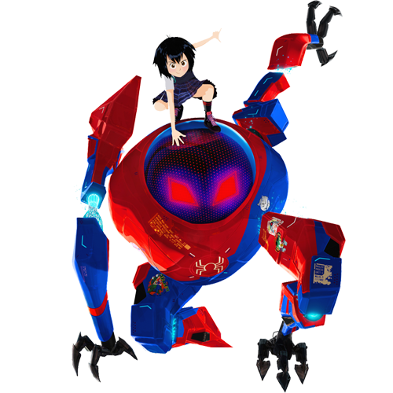

Miles Morales is a teenager hailing from an alternate dimension, who becomes the second Spider-Man
"My name is Miles Morales. I was bitten by a radioactive spider and for like two days, I've been the one and only Spider-Man. I never thought I'd be able to do any of this stuff, but I can. Anyone can wear the mask. You can wear the mask. If you didn't know that before, I hope you do now. "




Peter Parker
"Alright, let's do this one last time. My name is Peter Parker. I was bitten by a radioactive spider, and for 10 years, I've been the one and only...Spider-Man. I'm pretty sure you know the rest: I saved a bunch of people, fell in love, saved the city, and then I saved the city again, and again, and again, and again.
And I did uh, I did this. We don't really talk about this. Look, I'm a comic book, I'm a cereal,did a Christmas album, I have an excellent theme song, and a so-so Popsicle. I mean, I've looked worse. But after everything, I still LOVE being Spider-Man.



Gwendolyn Stacy
"My name is Gwen Stacy. I was bitten by a radioactive spider. And for the last two years, I've been the one and only Spider-Woman. You guys know the rest. I joined a band. Saved my dad. I couldn’t save my best friend, Peter Parker. So now I save everyone else. And I don’t do friends anymore. Just to avoid any distractions."
Other Spider-Man
Noir
Hailing from universe, where it is 1933 and black and white, Peter Parker worked as a private eye detective who was bit by a radioactive spider. He gained spider-like abilities and became a hero.

Peter Porker
"My name is Peter Porker. I was bitten by a radioactive pig. I'm a photographer for the Daily Beagle. When I'm not pooching around, I'm working like a dog trying to sniff out the latest story. I frolic and I dance, and I do this with my pants..."

Peni Parker
Not much is known about Peni's life, except that she comes from a Japanese background. In her world, it is New York but in the year 3145 in the future, like her other counterparts in the multiverse, she's bitten by a radioactive spider. At an unknown time, her father passed away, thus leaving Peni to pilot the robot mech known as SP//dr. She kept a radioactive spider in the SP//dr and they both share a telepathic connection and they have become best friends.

Kingpin
Wilson Fisk, also known as the Kingpin, is an infamous and powerful crime boss in New York City. Wilson Fisk was a criminal who eventually rose in power in New York City's criminal underworld, eventually taking over as it's top crime lord, going under the moniker the Kingpin of Crime. His vast fortune and influence caused severe mayhem via the criminal activity he directed.